import pandas as pd
import numpy as np
import pywt # 小波分析
from scipy import stats
import scipy.fftpack as fftpack # 希尔伯特变换
import itertools
import datetime as dt
from tqdm import *
from jqdata import *
import talib
from sklearn import preprocessing
from sklearn import svm
import seaborn as sns
import matplotlib as mpl
import matplotlib.pyplot as plt
import matplotlib.dates as mdate
import matplotlib.gridspec as mg # 不规则子图
pd.plotting.register_matplotlib_converters()
# 设置字体 用来正常显示中文标签
mpl.rcParams['font.sans-serif'] = ['Microsoft YaHei']
mpl.rcParams['font.family']='serif' # pd.plot中文
# 用来正常显示负号
mpl.rcParams['axes.unicode_minus'] = False
# 图表主题
plt.style.use('seaborn')
# 回测模块
import datetime
import numpy as np
import pandas as pd
import time
import copy
import pickle
from jqdata import *
from pandas import Series, DataFrame
import matplotlib.pyplot as plt
import seaborn as sns
import itertools
# 定义类'参数分析'
class parameter_analysis(object):
# 定义函数中不同的变量
def __init__(self, algorithm_id=None):
self.algorithm_id = algorithm_id # 回测id
self.params_df = pd.DataFrame() # 回测中所有调参备选值的内容，列名字为对应修改面两名称，对应回测中的 g.XXXX
self.results = {} # 回测结果的回报率，key 为 params_df 的行序号，value 为
self.evaluations = {} # 回测结果的各项指标，key 为 params_df 的行序号，value 为一个 dataframe
self.backtest_ids = {} # 回测结果的 id
# 新加入的基准的回测结果 id，可以默认为空 ''，则使用回测中设定的基准
self.benchmark_id = 'f16629492d6b6f4040b2546262782c78'
self.benchmark_returns = [] # 新加入的基准的回测回报率
self.returns = {} # 记录所有回报率
self.excess_returns = {} # 记录超额收益率
self.log_returns = {} # 记录收益率的 log 值
self.log_excess_returns = {} # 记录超额收益的 log 值
self.dates = [] # 回测对应的所有日期
self.excess_max_drawdown = {} # 计算超额收益的最大回撤
self.excess_annual_return = {} # 计算超额收益率的年化指标
self.evaluations_df = pd.DataFrame() # 记录各项回测指标，除日回报率外
self.failed_list= []
# 定义排队运行多参数回测函数
def run_backtest(self, #
algorithm_id=None, # 回测策略id
running_max=10, # 回测中同时巡行最大回测数量
start_date='2006-01-01', # 回测的起始日期
end_date='2016-11-30', # 回测的结束日期
frequency='day', # 回测的运行频率
initial_cash='1000000', # 回测的初始持仓金额
param_names=[], # 回测中调整参数涉及的变量
param_values=[], # 回测中每个变量的备选参数值
python_version = 2, # 回测的python版本
use_credit =False # 是否允许消耗积分继续回测
):
# 当此处回测策略的 id 没有给出时，调用类输入的策略 id
if algorithm_id == None: algorithm_id=self.algorithm_id
# 生成所有参数组合并加载到 df 中
# 包含了不同参数具体备选值的排列组合中一组参数的 tuple 的 list
param_combinations = list(itertools.product(*param_values))
# 生成一个 dataframe， 对应的列为每个调参的变量，每个值为调参对应的备选值
to_run_df = pd.DataFrame(param_combinations,dtype='object')
# 修改列名称为调参变量的名字
to_run_df.columns = param_names
# 设定运行起始时间和保存格式
start = time.time()
# 记录结束的运行回测
finished_backtests = {}
# 记录运行中的回测
running_backtests = {}
# 计数器
pointer = 0
# 总运行回测数目，等于排列组合中的元素个数
total_backtest_num = len(param_combinations)
# 记录回测结果的回报率
all_results = {}
# 记录回测结果的各项指标
all_evaluations = {}
# 在运行开始时显示
print(('【已完成|运行中|待运行】:'), end=' ')
# 当运行回测开始后，如果没有全部运行完全的话：
while len(finished_backtests)<total_backtest_num:
# 显示运行、完成和待运行的回测个数
print(('[%s|%s|%s].' % (len(finished_backtests),
len(running_backtests),
(total_backtest_num-len(finished_backtests)-len(running_backtests)) )), end=' ')
# 记录当前运行中的空位数量
to_run = min(running_max-len(running_backtests), total_backtest_num-len(running_backtests)-len(finished_backtests))
# 把可用的空位进行跑回测
for i in range(pointer, pointer+to_run):
# 备选的参数排列组合的 df 中第 i 行变成 dict，每个 key 为列名字，value 为 df 中对应的值
params = to_run_df.iloc[i].to_dict()
# 记录策略回测结果的 id，调整参数 extras 使用 params 的内容
backtest = create_backtest(algorithm_id = algorithm_id,
start_date = start_date,
end_date = end_date,
frequency = frequency,
initial_cash = initial_cash,
extras = params,
# 再回测中把改参数的结果起一个名字，包含了所有涉及的变量参数值
name = str(params),
python_version = python_version,
use_credit = use_credit
)
# 记录运行中 i 回测的回测 id
running_backtests[i] = backtest
# 计数器计数运行完的数量
pointer = pointer+to_run
# 获取回测结果
failed = []
finished = []
# 对于运行中的回测，key 为 to_run_df 中所有排列组合中的序数
for key in list(running_backtests.keys()):
# 研究调用回测的结果，running_backtests[key] 为运行中保存的结果 id
back_id = running_backtests[key]
bt = get_backtest(back_id)
# 获得运行回测结果的状态，成功和失败都需要运行结束后返回，如果没有返回则运行没有结束
status = bt.get_status()
# 当运行回测失败
if status == 'failed':
# 失败 list 中记录对应的回测结果 id
print('')
print(('回测失败 : https://www.joinquant.com/algorithm/backtest/detail?backtestId='+back_id))
failed.append(key)
# 当运行回测成功时
elif status == 'done':
# 成功 list 记录对应的回测结果 id，finish 仅记录运行成功的
finished.append(key)
# 回测回报率记录对应回测的回报率 dict， key to_run_df 中所有排列组合中的序数， value 为回报率的 dict
# 每个 value 一个 list 每个对象为一个包含时间、日回报率和基准回报率的 dict
all_results[key] = bt.get_results()
# 回测回报率记录对应回测结果指标 dict， key to_run_df 中所有排列组合中的序数， value 为回测结果指标的 dataframe
all_evaluations[key] = bt.get_risk()
# 记录运行中回测结果 id 的 list 中删除失败的运行
for key in failed:
finished_backtests[key] = running_backtests.pop(key)
# 在结束回测结果 dict 中记录运行成功的回测结果 id，同时在运行中的记录中删除该回测
for key in finished:
finished_backtests[key] = running_backtests.pop(key)
# print (finished_backtests)
# 当一组同时运行的回测结束时报告时间
if len(finished_backtests) != 0 and len(finished_backtests) % running_max == 0 and to_run !=0:
# 记录当时时间
middle = time.time()
# 计算剩余时间，假设没工作量时间相等的话
remain_time = (middle - start) * (total_backtest_num - len(finished_backtests)) / len(finished_backtests)
# print 当前运行时间
print(('[已用%s时,尚余%s时,请不要关闭浏览器].' % (str(round((middle - start) / 60.0 / 60.0,3)),
str(round(remain_time / 60.0 / 60.0,3)))), end=' ')
self.failed_list += failed
# 5秒钟后再跑一下
time.sleep(5)
# 记录结束时间
end = time.time()
print('')
print(('【回测完成】总用时：%s秒(即%s小时)。' % (str(int(end-start)),
str(round((end-start)/60.0/60.0,2)))), end=' ')
# print (to_run_df,all_results,all_evaluations,finished_backtests)
# 对应修改类内部对应
# to_run_df = {key:value for key,value in returns.items() if key not in faild}
self.params_df = to_run_df
# all_results = {key:value for key,value in all_results.items() if key not in faild}
self.results = all_results
# all_evaluations = {key:value for key,value in all_evaluations.items() if key not in faild}
self.evaluations = all_evaluations
# finished_backtests = {key:value for key,value in finished_backtests.items() if key not in faild}
self.backtest_ids = finished_backtests
#7 最大回撤计算方法
def find_max_drawdown(self, returns):
# 定义最大回撤的变量
result = 0
# 记录最高的回报率点
historical_return = 0
# 遍历所有日期
for i in range(len(returns)):
# 最高回报率记录
historical_return = max(historical_return, returns[i])
# 最大回撤记录
drawdown = 1-(returns[i] + 1) / (historical_return + 1)
# 记录最大回撤
result = max(drawdown, result)
# 返回最大回撤值
return result
# log 收益、新基准下超额收益和相对与新基准的最大回撤
def organize_backtest_results(self, benchmark_id=None):
# 若新基准的回测结果 id 没给出
if benchmark_id==None:
# 使用默认的基准回报率，默认的基准在回测策略中设定
self.benchmark_returns = [x['benchmark_returns'] for x in self.results[0]]
# 当新基准指标给出后
else:
# 基准使用新加入的基准回测结果
self.benchmark_returns = [x['returns'] for x in get_backtest(benchmark_id).get_results()]
# 回测日期为结果中记录的第一项对应的日期
self.dates = [x['time'] for x in self.results[0]]
# 对应每个回测在所有备选回测中的顺序 （key），生成新数据
# 由 {key：{u'benchmark_returns': 0.022480100091729405,
# u'returns': 0.03184566700000002,
# u'time': u'2006-02-14'}} 格式转化为：
# {key: []} 格式，其中 list 为对应 date 的一个回报率 list
for key in list(self.results.keys()):
self.returns[key] = [x['returns'] for x in self.results[key]]
# 生成对于基准（或新基准）的超额收益率
for key in list(self.results.keys()):
self.excess_returns[key] = [(x+1)/(y+1)-1 for (x,y) in zip(self.returns[key], self.benchmark_returns)]
# 生成 log 形式的收益率
for key in list(self.results.keys()):
self.log_returns[key] = [log(x+1) for x in self.returns[key]]
# 生成超额收益率的 log 形式
for key in list(self.results.keys()):
self.log_excess_returns[key] = [log(x+1) for x in self.excess_returns[key]]
# 生成超额收益率的最大回撤
for key in list(self.results.keys()):
self.excess_max_drawdown[key] = self.find_max_drawdown(self.excess_returns[key])
# 生成年化超额收益率
for key in list(self.results.keys()):
self.excess_annual_return[key] = (self.excess_returns[key][-1]+1)**(252./float(len(self.dates)))-1
# 把调参数据中的参数组合 df 与对应结果的 df 进行合并
self.evaluations_df = pd.concat([self.params_df, pd.DataFrame(self.evaluations).T], axis=1)
# self.evaluations_df =
# 获取最总分析数据，调用排队回测函数和数据整理的函数
def get_backtest_data(self,
algorithm_id=None, # 回测策略id
benchmark_id=None, # 新基准回测结果id
file_name='results.pkl', # 保存结果的 pickle 文件名字
running_max=10, # 最大同时运行回测数量
start_date='2006-01-01', # 回测开始时间
end_date='2016-11-30', # 回测结束日期
frequency='day', # 回测的运行频率
initial_cash='1000000', # 回测初始持仓资金
param_names=[], # 回测需要测试的变量
param_values=[], # 对应每个变量的备选参数
python_version = 2,
use_credit = False
):
# 调运排队回测函数，传递对应参数
self.run_backtest(algorithm_id=algorithm_id,
running_max=running_max,
start_date=start_date,
end_date=end_date,
frequency=frequency,
initial_cash=initial_cash,
param_names=param_names,
param_values=param_values,
python_version = python_version,
use_credit = use_credit,
)
# 回测结果指标中加入 log 收益率和超额收益率等指标
self.organize_backtest_results(benchmark_id)
# 生成 dict 保存所有结果。
results = {'returns':self.returns,
'excess_returns':self.excess_returns,
'log_returns':self.log_returns,
'log_excess_returns':self.log_excess_returns,
'dates':self.dates,
'benchmark_returns':self.benchmark_returns,
'evaluations':self.evaluations,
'params_df':self.params_df,
'backtest_ids':self.backtest_ids,
'excess_max_drawdown':self.excess_max_drawdown,
'excess_annual_return':self.excess_annual_return,
'evaluations_df':self.evaluations_df,
"failed_list" : self.failed_list}
# 保存 pickle 文件
pickle_file = open(file_name, 'wb')
pickle.dump(results, pickle_file)
pickle_file.close()
# 读取保存的 pickle 文件，赋予类中的对象名对应的保存内容
def read_backtest_data(self, file_name='results.pkl'):
pickle_file = open(file_name, 'rb')
results = pickle.load(pickle_file)
self.returns = results['returns']
self.excess_returns = results['excess_returns']
self.log_returns = results['log_returns']
self.log_excess_returns = results['log_excess_returns']
self.dates = results['dates']
self.benchmark_returns = results['benchmark_returns']
self.evaluations = results['evaluations']
self.params_df = results['params_df']
self.backtest_ids = results['backtest_ids']
self.excess_max_drawdown = results['excess_max_drawdown']
self.excess_annual_return = results['excess_annual_return']
self.evaluations_df = results['evaluations_df']
self.failed_list = results['failed_list']
# 回报率折线图
def plot_returns(self):
# 通过figsize参数可以指定绘图对象的宽度和高度，单位为英寸；
fig = plt.figure(figsize=(20,8))
ax = fig.add_subplot(111)
# 作图
for key in list(self.returns.keys()):
ax.plot(list(range(len(self.returns[key]))), self.returns[key], label=key)
# 设定benchmark曲线并标记
ax.plot(list(range(len(self.benchmark_returns))), self.benchmark_returns, label='benchmark', c='k', linestyle='--')
ticks = [int(x) for x in np.linspace(0, len(self.dates)-1, 11)]
plt.xticks(ticks, [self.dates[i] for i in ticks])
# 设置图例样式
ax.legend(loc = 2, fontsize = 10)
# 设置y标签样式
ax.set_ylabel('returns',fontsize=20)
# 设置x标签样式
ax.set_yticklabels([str(x*100)+'% 'for x in ax.get_yticks()])
# 设置图片标题样式
ax.set_title("Strategy's performances with different parameters", fontsize=21)
plt.xlim(0, len(self.returns[0]))
# 超额收益率图
def plot_excess_returns(self):
# 通过figsize参数可以指定绘图对象的宽度和高度，单位为英寸；
fig = plt.figure(figsize=(20,8))
ax = fig.add_subplot(111)
# 作图
for key in list(self.returns.keys()):
ax.plot(list(range(len(self.excess_returns[key]))), self.excess_returns[key], label=key)
# 设定benchmark曲线并标记
ax.plot(list(range(len(self.benchmark_returns))), [0]*len(self.benchmark_returns), label='benchmark', c='k', linestyle='--')
ticks = [int(x) for x in np.linspace(0, len(self.dates)-1, 11)]
plt.xticks(ticks, [self.dates[i] for i in ticks])
# 设置图例样式
ax.legend(loc = 2, fontsize = 10)
# 设置y标签样式
ax.set_ylabel('excess returns',fontsize=20)
# 设置x标签样式
ax.set_yticklabels([str(x*100)+'% 'for x in ax.get_yticks()])
# 设置图片标题样式
ax.set_title("Strategy's performances with different parameters", fontsize=21)
plt.xlim(0, len(self.excess_returns[0]))
# log回报率图
def plot_log_returns(self):
# 通过figsize参数可以指定绘图对象的宽度和高度，单位为英寸；
fig = plt.figure(figsize=(20,8))
ax = fig.add_subplot(111)
# 作图
for key in list(self.returns.keys()):
ax.plot(list(range(len(self.log_returns[key]))), self.log_returns[key], label=key)
# 设定benchmark曲线并标记
ax.plot(list(range(len(self.benchmark_returns))), [log(x+1) for x in self.benchmark_returns], label='benchmark', c='k', linestyle='--')
ticks = [int(x) for x in np.linspace(0, len(self.dates)-1, 11)]
plt.xticks(ticks, [self.dates[i] for i in ticks])
# 设置图例样式
ax.legend(loc = 2, fontsize = 10)
# 设置y标签样式
ax.set_ylabel('log returns',fontsize=20)
# 设置图片标题样式
ax.set_title("Strategy's performances with different parameters", fontsize=21)
plt.xlim(0, len(self.log_returns[0]))
# 超额收益率的 log 图
def plot_log_excess_returns(self):
# 通过figsize参数可以指定绘图对象的宽度和高度，单位为英寸；
fig = plt.figure(figsize=(20,8))
ax = fig.add_subplot(111)
# 作图
for key in list(self.returns.keys()):
ax.plot(list(range(len(self.log_excess_returns[key]))), self.log_excess_returns[key], label=key)
# 设定benchmark曲线并标记
ax.plot(list(range(len(self.benchmark_returns))), [0]*len(self.benchmark_returns), label='benchmark', c='k', linestyle='--')
ticks = [int(x) for x in np.linspace(0, len(self.dates)-1, 11)]
plt.xticks(ticks, [self.dates[i] for i in ticks])
# 设置图例样式
ax.legend(loc = 2, fontsize = 10)
# 设置y标签样式
ax.set_ylabel('log excess returns',fontsize=20)
# 设置图片标题样式
ax.set_title("Strategy's performances with different parameters", fontsize=21)
plt.xlim(0, len(self.log_excess_returns[0]))
# 回测的4个主要指标，包括总回报率、最大回撤夏普率和波动
def get_eval4_bar(self, sort_by=[]):
sorted_params = self.params_df
for by in sort_by:
sorted_params = sorted_params.sort(by)
indices = sorted_params.index
indices = set(sorted_params.index)-set(self.failed_list)
fig = plt.figure(figsize=(20,7))
# 定义位置
ax1 = fig.add_subplot(221)
# 设定横轴为对应分位，纵轴为对应指标
ax1.bar(list(range(len(indices))),
[self.evaluations[x]['algorithm_return'] for x in indices], 0.6, label = 'Algorithm_return')
plt.xticks([x+0.3 for x in range(len(indices))], indices)
# 设置图例样式
ax1.legend(loc='best',fontsize=15)
# 设置y标签样式
ax1.set_ylabel('Algorithm_return', fontsize=15)
# 设置y标签样式
ax1.set_yticklabels([str(x*100)+'% 'for x in ax1.get_yticks()])
# 设置图片标题样式
ax1.set_title("Strategy's of Algorithm_return performances of different quantile", fontsize=15)
# x轴范围
plt.xlim(0, len(indices))
# 定义位置
ax2 = fig.add_subplot(224)
# 设定横轴为对应分位，纵轴为对应指标
ax2.bar(list(range(len(indices))),
[self.evaluations[x]['max_drawdown'] for x in indices], 0.6, label = 'Max_drawdown')
plt.xticks([x+0.3 for x in range(len(indices))], indices)
# 设置图例样式
ax2.legend(loc='best',fontsize=15)
# 设置y标签样式
ax2.set_ylabel('Max_drawdown', fontsize=15)
# 设置x标签样式
ax2.set_yticklabels([str(x*100)+'% 'for x in ax2.get_yticks()])
# 设置图片标题样式
ax2.set_title("Strategy's of Max_drawdown performances of different quantile", fontsize=15)
# x轴范围
plt.xlim(0, len(indices))
# 定义位置
ax3 = fig.add_subplot(223)
# 设定横轴为对应分位，纵轴为对应指标
ax3.bar(list(range(len(indices))),
[self.evaluations[x]['sharpe'] for x in indices], 0.6, label = 'Sharpe')
plt.xticks([x+0.3 for x in range(len(indices))], indices)
# 设置图例样式
ax3.legend(loc='best',fontsize=15)
# 设置y标签样式
ax3.set_ylabel('Sharpe', fontsize=15)
# 设置x标签样式
ax3.set_yticklabels([str(x*100)+'% 'for x in ax3.get_yticks()])
# 设置图片标题样式
ax3.set_title("Strategy's of Sharpe performances of different quantile", fontsize=15)
# x轴范围
plt.xlim(0, len(indices))
# 定义位置
ax4 = fig.add_subplot(222)
# 设定横轴为对应分位，纵轴为对应指标
ax4.bar(list(range(len(indices))),
[self.evaluations[x]['algorithm_volatility'] for x in indices], 0.6, label = 'Algorithm_volatility')
plt.xticks([x+0.3 for x in range(len(indices))], indices)
# 设置图例样式
ax4.legend(loc='best',fontsize=15)
# 设置y标签样式
ax4.set_ylabel('Algorithm_volatility', fontsize=15)
# 设置x标签样式
ax4.set_yticklabels([str(x*100)+'% 'for x in ax4.get_yticks()])
# 设置图片标题样式
ax4.set_title("Strategy's of Algorithm_volatility performances of different quantile", fontsize=15)
# x轴范围
plt.xlim(0, len(indices))
#14 年化回报和最大回撤，正负双色表示
def get_eval(self, sort_by=[]):
sorted_params = self.params_df
for by in sort_by:
sorted_params = sorted_params.sort(by)
indices = sorted_params.index
indices = set(sorted_params.index)-set(self.failed_list)
# 大小
fig = plt.figure(figsize = (20, 8))
# 图1位置
ax = fig.add_subplot(111)
# 生成图超额收益率的最大回撤
ax.bar([x+0.3 for x in range(len(indices))],
[-self.evaluations[x]['max_drawdown'] for x in indices], color = '#32CD32',
width = 0.6, label = 'Max_drawdown', zorder=10)
# 图年化超额收益
ax.bar([x for x in range(len(indices))],
[self.evaluations[x]['annual_algo_return'] for x in indices], color = 'r',
width = 0.6, label = 'Annual_return')
plt.xticks([x+0.3 for x in range(len(indices))], indices)
# 设置图例样式
ax.legend(loc='best',fontsize=15)
# 基准线
plt.plot([0, len(indices)], [0, 0], c='k',
linestyle='--', label='zero')
# 设置图例样式
ax.legend(loc='best',fontsize=15)
# 设置y标签样式
ax.set_ylabel('Max_drawdown', fontsize=15)
# 设置x标签样式
ax.set_yticklabels([str(x*100)+'% 'for x in ax.get_yticks()])
# 设置图片标题样式
ax.set_title("Strategy's performances of different quantile", fontsize=15)
# 设定x轴长度
plt.xlim(0, len(indices))
#14 超额收益的年化回报和最大回撤
# 加入新的benchmark后超额收益和
def get_excess_eval(self, sort_by=[]):
sorted_params = self.params_df
for by in sort_by:
sorted_params = sorted_params.sort(by)
indices = sorted_params.index
indices = set(sorted_params.index)-set(self.failed_list)
# 大小
fig = plt.figure(figsize = (20, 8))
# 图1位置
ax = fig.add_subplot(111)
# 生成图超额收益率的最大回撤
ax.bar([x+0.3 for x in range(len(indices))],
[-self.excess_max_drawdown[x] for x in indices], color = '#32CD32',
width = 0.6, label = 'Excess_max_drawdown')
# 图年化超额收益
ax.bar([x for x in range(len(indices))],
[self.excess_annual_return[x] for x in indices], color = 'r',
width = 0.6, label = 'Excess_annual_return')
plt.xticks([x+0.3 for x in range(len(indices))], indices)
# 设置图例样式
ax.legend(loc='best',fontsize=15)
# 基准线
plt.plot([0, len(indices)], [0, 0], c='k',
linestyle='--', label='zero')
# 设置图例样式
ax.legend(loc='best',fontsize=15)
# 设置y标签样式
ax.set_ylabel('Max_drawdown', fontsize=15)
# 设置x标签样式
ax.set_yticklabels([str(x*100)+'% 'for x in ax.get_yticks()])
# 设置图片标题样式
ax.set_title("Strategy's performances of different quantile", fontsize=15)
# 设定x轴长度
一、小波分析#
小波分析理论是目前科学界和工程界讨论和研究最多的课题之一，它包含了丰富的数学内容，又具有巨大的应用潜力。小波分析是在 Fourier 分析的基础上发展起来的，是调和分析近半个世纪以来的结晶。其基本思想是将一般函数（信号）表示为规范正交小波基的线性叠加，核心内容是小波变换。由于小波变换在时域和频域具有良好的局部化性质，能自动调整时、频窗口，以适应实际分析需要，因而已成为许多工程学科应用的有力工具。
小波分析属时频分析的一种，主要依据下面三步来实现(Python开源库pywt是专门做小波分析的库)：
Decomposition——将信号序列分解为N层小波
Denoise——对于分解得到的小波，选择阈值并进行去噪处理(要注意的是不是对每个小波都要处理，一般选择几个进行处理)
Reconstruction——将去噪后的小波，和未处理的小波，重构得到处理后的信号
关于小波的选择及阈值处理的总结
《量化投资：策略与技术》
综合来看，dbN（即Daubechies系列小波）、 symN（Symlets系列小波）、coifN（Coiflet系列小波）都比较合适，并且对于股价序列等相对 比较平缓的序列可选择消失矩阶数稍高一点， 即对应小波序列N取4～8都是可以的。但对收益率数据， 因其奇异点密度非常大，消失矩不能高， 建议不要超过4，即db2 ～ db4比较恰当。
对股票价格等数据而言，其信号频率较少地与噪声重叠因此可以选用sqtwolog和heursure准则，使去噪效果更明显。 但对收益率这样的高频数据，尽量采用保守的 rigrsure 或 minimaxi 准则来确定阈值，以保留较多的信号。
《平安证券-量化择时选股系列报告二：水致清则鱼自现_小波分析与支持向量机择时研究》
采用 Symlets小波 + rigrsure法选择阈值 + 软约束方法 对 上证指数进行的处理
《国信证券-基于小波分析和支持向量机的指数预测模型》
采用 选择小波Daubechies小波系(db4)并确定分解层次为 4 层 + sqtwolog阀值估计准则 +软约束方法 对沪深300进行的处理
print('查看小波函数族：',pywt.families())
print('查看sym小波族下的所有函数：',pywt.wavelist(family='sym',kind='all'))
print('查看mode的所有方法:',pywt.Modes.modes)
查看小波函数族： ['haar', 'db', 'sym', 'coif', 'bior', 'rbio', 'dmey', 'gaus', 'mexh', 'morl', 'cgau', 'shan', 'fbsp', 'cmor']
查看sym小波族下的所有函数： ['sym2', 'sym3', 'sym4', 'sym5', 'sym6', 'sym7', 'sym8', 'sym9', 'sym10', 'sym11', 'sym12', 'sym13', 'sym14', 'sym15', 'sym16', 'sym17', 'sym18', 'sym19', 'sym20']
查看mode的所有方法: ['zero', 'constant', 'symmetric', 'periodic', 'smooth', 'periodization', 'reflect', 'antisymmetric', 'antireflect']
小波阈值处理#
具体处理及确认方法见代码
# 信号去噪
class DenoisingThreshold(object):
'''
获取小波去噪的阈值
1. CalSqtwolog 固定阈值准则(sqtwolog)
2. CalRigrsure 无偏风险估计准则（rigrsure）
3. CalMinmaxi 极小极大准则（ minimaxi）
4. CalHeursure
参考：https://wenku.baidu.com/view/63d62a818762caaedd33d463.html
对股票价格等数据而言，其信号频率较少地与噪声重叠因此可以选用sqtwolog和heursure准则，使去噪效果更明显。
但对收益率这样的高频数据，尽量采用保守的 rigrsure 或 minimaxi 准则来确定阈值，以保留较多的信号。
'''
def __init__(self,signal: np.array):
self.signal = signal
self.N = len(signal)
# 固定阈值准则(sqtwolog)
@property
def CalSqtwolog(self) -> float:
return np.sqrt(2 * np.log(self.N))
# 无偏风险估计准则（rigrsure）
@property
def CalRigrsure(self)->float:
N = self.N
signal = np.abs(self.signal)
signal = np.sort(signal)
signal = np.power(signal, 2)
risk_j = np.zeros(N)
for j in range(N):
if j == 0:
risk_j[j] = 1 + signal[N - 1]
else:
risk_j[j] = (N - 2 * j + (N - j) *
(signal[N - j]) + np.sum(signal[:j])) / N
k = risk_j.argmin()
return np.sqrt(signal[k])
# 极小极大准则（ minimaxi）
@property
def CalMinmaxi(self)->float:
if self.N > 32:
# N>32 可以使用minmaxi阈值 反之则为0
return 0.3936 + 0.1829 * (np.log(self.N) / np.log(2))
else:
return 0
@property
def GetCrit(self)->float:
return np.sqrt(np.power(np.log(self.N) / np.log(2), 3) * 1 / self.N)
@property
def GetEta(self)->float:
return (np.sum(np.abs(self.signal)**2) - self.N) / self.N
#混合准则（heursure）
@property
def CalHeursure(self):
if self.GetCrit > self.GetEta:
#print('推荐使用sqtwolog阈值')
return self.CalSqtwolog
else:
#print('推荐使用 Min(sqtwolog阈值,rigrsure阈值)')
return min(self.CalRigrsure,self.CalSqtwolog)
# 数据获取
HS300 = get_price('000300.XSHG','2014-01-01','2020-05-31',fields='close',panel=False)
HS300.columns = ['HS300']
HS300.head()
| HS300 | |
|---|---|
| 2014-01-02 | 2321.98 |
| 2014-01-03 | 2290.78 |
| 2014-01-06 | 2238.64 |
| 2014-01-07 | 2238.00 |
| 2014-01-08 | 2241.91 |
对HS300指数时间序列进行小波分解，小波函数选择为db4，分解层个数为4个，即一个主要趋势，和四个细节成分
res_4 = pywt.wavedec(HS300['HS300'].values,wavelet='db8',mode='smooth',level=4)
#四个参数分别 对应 输入的信号 ，小波名称， 信号扩展模式， 分解阶次
col_name = ['主趋势'] + [f'细节{i}' for i in range(1,5)]
res4_df = pd.DataFrame(res_4,index=col_name).T
res4_df.head()
| 主趋势 | 细节1 | 细节2 | 细节3 | 细节4 | |
|---|---|---|---|---|---|
| 0 | 32209.815891 | 1.514788e-12 | 7.673862e-13 | 3.852474e-13 | 6.383782e-14 |
| 1 | 30212.671446 | -5.095912e-05 | -3.509303e-06 | 6.758547e-02 | -7.075012e+00 |
| 2 | 28215.527003 | 3.034437e-04 | 3.228442e-02 | 6.365657e-01 | -7.822495e+00 |
| 3 | 26218.382487 | -2.725954e-02 | 9.129420e-01 | 2.758817e+00 | 1.130505e+01 |
| 4 | 24221.234249 | -2.053835e+00 | 6.577057e+00 | 2.580613e+01 | 4.474413e-01 |
mpl.rcParams['font.family']='serif'
res4_df.iloc[:, 1:].plot(
subplots=True, layout=(2, 2), figsize=(18, 8), sharex=False)
plt.show()
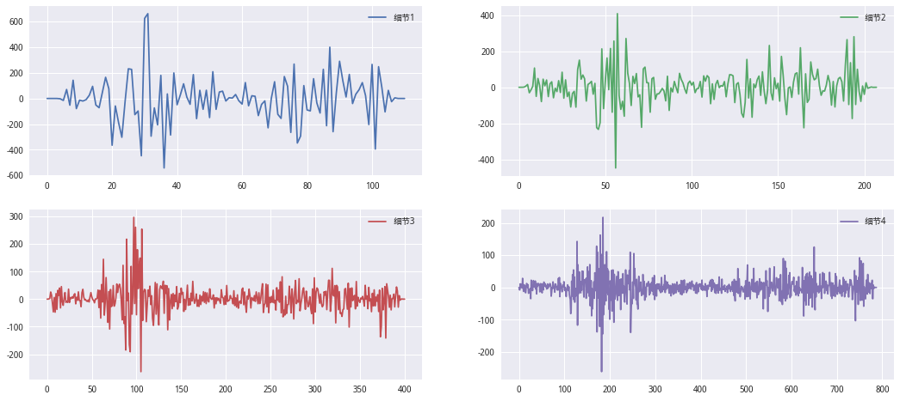
从上图可以看到，相对而言，细节3和4更像是高频的噪声信号，故对这两个细节进行阈值降噪处理。这里涉及到阈值选择的问题。 通常来说，阈值选择有：1、无偏风险估计阈值(rigrsure) 2、固定阈值 3、启发式阈值 4、极大极小阈值 这些方法，在这里选择rigsure方法来确定阈值
#对于高频的信号进行阈值处理
for j in [3,4]:
signal = res_4[j]
threshold = DenoisingThreshold(signal).CalRigrsure
res_4[j] = pywt.threshold(signal, threshold, 'soft')
rec_hs = pywt.waverec(res_4, 'db8')
## 为什么小波重构后的序列 和 原序列的长度 存在差异呢？？？
HS300['小波滤波后的HS300'] = rec_hs[1:]
HS300.plot(subplots=True,figsize=(18,12))
plt.show()
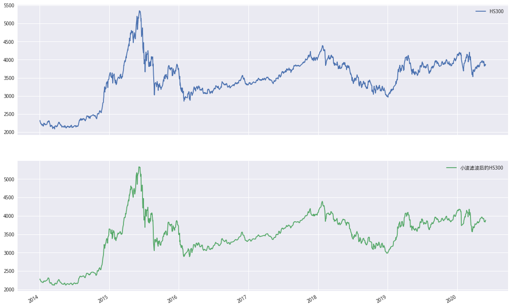
可以看到小波处理后的序列，相对平滑一些，可能可以避免原序列中的噪声对模型预测带来的负面影响
二、HS300日涨跌预测#
考虑利用7个指标(最近M日最高价，最近M日最低价，当日成交额在最近M日成交额中占比，过去M日涨跌幅，最近M日均价，MACD，RSI)，来对HS300的日涨跌进行预测。 本例中选择的分类器为SVM(核函数默认)。要说明的是，对于上述这些特征进行了标准化处理。M选择为5。查看了不同的模型训练窗宽下对HS300日涨跌的预测效果，汇总在res_svm_pred中。
HS300_data = get_price("000300.XSHG",
'2013-01-01',
'2020-05-31',
fields= "high,low,money,pre_close,close".split(','),
panel=False)
HS300_data = HS300_data.dropna()
HS300_data.head()
| high | low | money | pre_close | close | |
|---|---|---|---|---|---|
| 2013-01-04 | 2558.53 | 2498.89 | 9.557925e+10 | 2522.95 | 2524.41 |
| 2013-01-07 | 2545.97 | 2511.60 | 7.316751e+10 | 2524.41 | 2535.99 |
| 2013-01-08 | 2540.51 | 2502.49 | 7.649806e+10 | 2535.99 | 2525.33 |
| 2013-01-09 | 2534.24 | 2504.30 | 7.423360e+10 | 2525.33 | 2526.13 |
| 2013-01-10 | 2553.35 | 2513.73 | 7.115905e+10 | 2526.13 | 2530.57 |
# 小波处理+svm滚动预测
class wavelet_svm_model(object):
'''对数据进行建模预测
--------------------
输入参数：
data:必须包含OHLC money
M:train数据的滚动计算窗口
window:滚动窗口 即T至T-window日 预测T-1至T-window日数据 预测T日数据
wavelet\wavelet_mode:同pywt.wavedec的参数
th_mode:阈值确认准则
filter_num:需要过滤小波的细节组 比如(3,4)对三至四组进行过滤 为空则是1-4组全过滤
whether_wave_process:是否使用小波处理
--------------------
方法：
wave_process:过滤阈值 采用固定阈值准则（sqtwolog）
preprocess:生成训练用字段
1. 近M日最高价
2. 近M日最低价
3. 成交额占比
4. 近M日涨跌幅
5. 近M日均价
6. MACK
7. RSI
8. 预测字段
standardization:归一化
rolling_svm:使用svm滚动训练
'''
def __init__(self,
data: pd.DataFrame,
M: int,
window: int,
wavelet: str,
wavelet_mode: str,
th_mode: str,
filter_num=None,
whether_wave_process: bool = False):
self.data = data
self.__M = M
self.__window = window
self.__wavelet = wavelet
self.__wavelet_mode = wavelet_mode
self.__th_mode = th_mode
self.__filter_num = filter_num
self.__whether_wave_process = whether_wave_process
self.__train_col = [] # 训练的字段
self.train_df = pd.DataFrame() # 储存训练数据
self.predict_df = pd.DataFrame() # 储存预测数据及真实Y
def wave_process(self):
'''对数据进行小波处理(可选)'''
if self.__filter_num:
a = self.__filter_num[0]
b = self.__filter_num[1]
else:
a = 1
b = 5
data = self.data.copy() # 复制
for col in data.columns:
denoised_ser = wave_transform(data[col],
wavelet=self.__wavelet,
wavelet_mode=self.__wavelet_mode,
level=4,
th_mode=self.__th_mode,
n=a,
m=b)
data[col] = denoised_ser
self.train_df = data
def preprocess(self):
'''生成相应的特征'''
if self.__whether_wave_process:
self.wave_process() # 小波处理
data = self.train_df
else:
data = self.data.copy()
data['MACD'] = talib.MACD(
data['close'], fastperiod=6, slowperiod=12, signalperiod=9)[0]
data['RSI'] = talib.RSI(data['close'], timeperiod=14)
data['近M日最高价'] = data['high'].rolling(self.__M).max()
data['近M日最低价'] = data['low'].rolling(self.__M).min()
data['成交额占比'] = data['money'] / data['money'].rolling(self.__M).sum()
data['近M日涨跌幅'] = data['close'].pct_change(self.__M)
data['近M日均价'] = data['close'].rolling(self.__M).mean()
self.predict_df['Y'] = np.sign(data['close'] / data['pre_close'] - 1) # 预测字段
self.train_df = data.iloc[self.__M + 14:]
self.__train_col = self.train_df.columns
def standardization(self):
'''对所有特征进行标准化处理'''
#data = preprocessing.scale(self.train_df.values)
scaler = preprocessing.StandardScaler()
data = scaler.fit_transform(self.train_df.values)
data = pd.DataFrame(
data, index=self.train_df.index, columns=self.__train_col)
data['Y'] = self.predict_df['Y']
self.train_df = data
def rolling_svm(self):
'''利用SVM模型进行建模预测'''
predict_ser = rolling_apply(self.train_df, self.model_fit,
self.__window)
self.predict_df['predict'] = predict_ser
self.predict_df = self.predict_df.iloc[self.__window + self.__M:]
def model_fit(self, df: pd.DataFrame) -> pd.Series:
idx = df.index[-1]
train_x = df[self.__train_col].iloc[:-1]
train_y = df['Y'].shift(-1).iloc[:-1] # 对需要预测的y进行滞后一期处理
test_x = df[self.__train_col].iloc[-1:]
model = svm.SVC(gamma=0.001)
model.fit(train_x, train_y)
return pd.Series(model.predict(test_x), index=[idx])
# 小波变换
def wave_transform(data_ser:pd.Series,wavelet:str,wavelet_mode:str,level:int,th_mode:str,n:int,m:int)->pd.Series:
'''
参数：
data_ser:pd.Series
wavelet\wavelet_mode\level：同pywt.wavedec
th_mode:选择阈值的准则
n,m:需要过了的层级范围
'''
res1 = pywt.wavedec(
data_ser.values, wavelet=wavelet, mode=wavelet_mode, level=level)
denoising_dic = {'rigrsure':'CalRigrsure',
'sqtwolog':'CalSqtwolog',
'heursure':'CalHeursure',
'minimaxi':'CalMinmaxi'}
for j in range(n,m+1):
dsth = DenoisingThreshold(res1[j])
threshold = getattr(dsth,denoising_dic[th_mode])
res1[j] = pywt.threshold(res1[j], threshold, 'soft')
# 为什么有时候 重构序列与原始序列长度不同？？
rec_time_data = pywt.waverec(res1, wavelet)
if len(rec_time_data) != len(data_ser):
return pd.Series(rec_time_data[1:],index=data_ser.index)
else:
return pd.Series(rec_time_data,index=data_ser.index)
class AnalysisWaveletModel(object):
'''通过不同的M及滚动训练窗口 查看模型预测情况'''
def __init__(self,
data: pd.DataFrame,
M_list: list,
window_list: list,
wavelet: str,
wavelet_mode: str,
th_mode:str,
whether_wave_process: bool = False):
self.data = data
self.__M_list = M_list
self.__window_list = window_list
self.__wavelet = wavelet
self.__wavelet_mode = wavelet_mode
self.__th_mode = th_mode
self.__whether_wave_process = whether_wave_process
self.Flag_df = pd.DataFrame() # 持仓标记
self.res_svm_pred = pd.DataFrame() # 训练结果展示表
def iterations_params(self):
params = list(itertools.product(self.__M_list, self.__window_list))
res_svm_pred = pd.DataFrame(columns=[
'M', '训练窗宽', '总预测次数', '成功次数', '成功概率', '上涨预测成功率', '下跌预测成功概率'
])
flag_list = []
for m, w in tqdm(params, desc='模型训练中'):
# 初始化模型
wsm = wavelet_svm_model(self.data, m, w, self.__wavelet,
self.__wavelet_mode, self.__th_mode,
self.__whether_wave_process)
# 计算训练字段
wsm.preprocess()
# 标准化
wsm.standardization()
# 滚动训练
wsm.rolling_svm()
predict_ = wsm.predict_df
predict_num = len(predict_)
predict_['predict'] = predict_['predict'].shift(1)
# 全部
right_num = len(predict_[predict_['predict'] == predict_['Y']])
right_pre = right_num / predict_num
# 上涨预测成功概率
up_df = predict_.query('Y==1')
up_num = len(up_df[up_df['predict'] == up_df['Y']]) / len(
up_df) # 上涨预测成功率
# 下跌预测成功概率
down_df = predict_.query('Y!=1')
down_num = len(down_df[down_df['predict'] == down_df['Y']]) / len(
down_df) # 上涨预测成功率
# 储存到容器中
res_svm_pred.loc[len(res_svm_pred), :] = [
m, w, predict_num, right_num, right_pre, up_num, down_num
]
predict_['predict'].name = f'{m}_{w}'
flag_list.append(wsm.predict_df['predict']) # 储存预测值 0，1标记代表持仓/空仓
self.Flag_df = pd.concat(flag_list, axis=1)
self.res_svm_pred = res_svm_pred
# 计算T值
def T_Value(self, n: int=0):
limit_n = len(self.res_svm_pred)
if n > limit_n or n == 0:
n = limit_n
probability_of_s = self.res_svm_pred['成功概率'].iloc[:n]
# 《平安证券 水致清则鱼自现——小波分析与支持向量机择时研究》给出的T值计算感觉不对
# t值应该是标准差吧 但他给出的是要用方差
#return (probability_of_s.mean() - 0.5) / (
# probability_of_s.var() / np.sqrt(n))
t_statistic,p_value = stats.ttest_1samp(probability_of_s.values,0.5)
return f't-statistic:{t_statistic},p_value:{p_value}'
# 定义rolling_apply理论上应该比for循环快
# pandas.rolling.apply不支持多列
def rolling_apply(df, func, win_size) -> pd.Series:
iidx = np.arange(len(df))
shape = (iidx.size - win_size + 1, win_size)
strides = (iidx.strides[0], iidx.strides[0])
res = np.lib.stride_tricks.as_strided(
iidx, shape=shape, strides=strides, writeable=True)
# 这里注意func返回的需要为df或者ser
return pd.concat((func(df.iloc[r]) for r in res), axis=0) # concat可能会有点慢
# 按需显示净值
def plot_cum(flag:pd.DataFrame,close_ser:pd.Series,target_col:list,title:str):
'''
flag:持仓标志 1持仓 0 空仓
close:指数收盘价
target_col:需要显示的目标列名
title:图表名称
'''
mpl.rcParams['font.family']='serif'
# 预测结果为1，-1,将其转为1，0,1为持仓，0为空仓
flag = flag.apply(lambda x:np.maximum(x,0))
# 日期对齐
price_df = close_ser.reindex(flag.index)
next_ret = price_df.pct_change().shift(-1)
# 计算净值
cum = (1 + flag.mul(next_ret,axis=0)).cumprod()
cum.loc[:,target_col].plot(figsize=(18,8),title=title)
(price_df / price_df[0]).plot(color='black',ls='--',label='benchmark',alpha=0.6)
plt.legend()
awm = AnalysisWaveletModel(HS300_data,[5,10,20],range(15,100+1,5),'db4','symmetric ','sqtwolog')
awm.iterations_params()
模型训练中: 100%|██████████| 54/54 [07:34<00:00, 8.76s/it]
检验不同时间窗情况下支持向量机的预测效果是否能够稳定的超过50%
# T值
awm.T_Value(0)
't-statistic:5.522676335339947,p_value:1.0286412581539622e-06'
预测成功率前五的参数情况
# 胜率最大的前五
res_df = awm.res_svm_pred
res_df.index = res_df['M'].astype(str) + '_' + res_df['训练窗宽'].astype(str)
top_5 = res_df.sort_values('成功概率',ascending=False).head()
top_5
| M | 训练窗宽 | 总预测次数 | 成功次数 | 成功概率 | 上涨预测成功率 | 下跌预测成功概率 | |
|---|---|---|---|---|---|---|---|
| 20_95 | 20 | 95 | 1684 | 887 | 0.526722 | 0.685941 | 0.351621 |
| 5_95 | 5 | 95 | 1699 | 894 | 0.526192 | 0.675676 | 0.362515 |
| 10_95 | 10 | 95 | 1694 | 888 | 0.524203 | 0.679458 | 0.35396 |
| 20_90 | 20 | 90 | 1689 | 880 | 0.521018 | 0.662528 | 0.364882 |
| 10_90 | 10 | 90 | 1699 | 884 | 0.520306 | 0.661036 | 0.366215 |
预测成功概率前五的净值情况,为什么预测成功概率高但是净偏低呢？
# 查看预测成功概率前五的净值情况
flag = awm.Flag_df
flag = flag.apply(lambda x:np.maximum(x,0))
next_ret = HS300_data['close'].pct_change().shift(-1)
# 计算净值
cum = (1 + flag.mul(next_ret,axis=0)).cumprod()
volatility = cum.std() * np.sqrt(244) # 波动率
annual_ret_rate = np.power(cum.iloc[-2],244 / len(cum))-1 # 年化收益
sharpe = annual_ret_rate / volatility # 夏普
# 预测成功率最高的5组
top_5_p = top_5.index.tolist()
# 累计净值最高的5组
top_5_c = cum.iloc[-2].sort_values(ascending=False).head().index.tolist()
# 夏普最高的5组
top_5_s = sharpe.sort_values(ascending=False).head().index.tolist()
plot_cum(flag,HS300_data['close'],top_5_p,'预测成功率的前5的净值')
plot_cum(flag,HS300_data['close'],top_5_c,'累计净值的前5的净值')
plot_cum(flag,HS300_data['close'],top_5_s,'夏普比率的前5的净值')
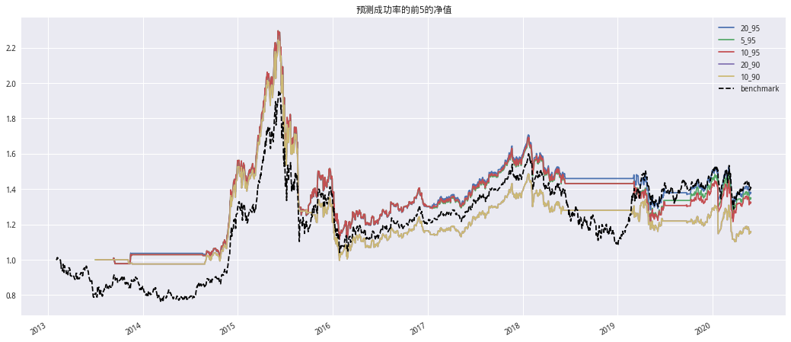
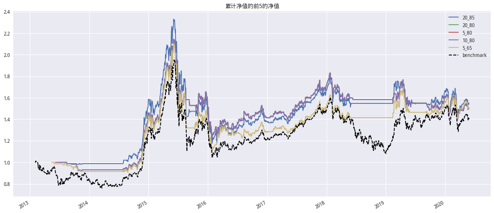
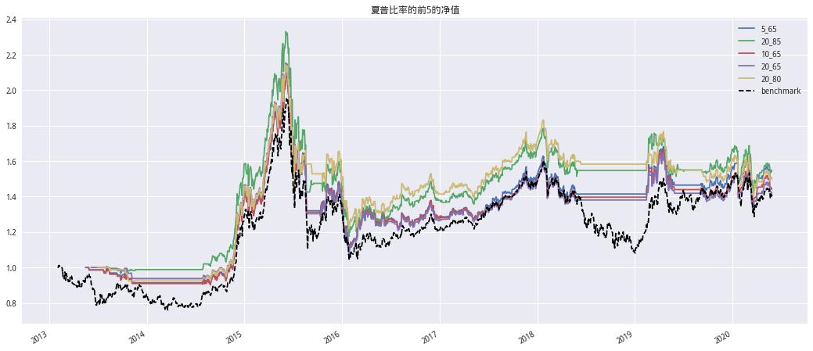
查看夏普最大的持仓标记点(绿色填充部分为有持仓的部分)
mpl.rcParams['font.family']='serif'
mask = flag.loc[:,top_5_s[0]]
HS300_data['close'].plot(figsize=(18,8),title='预测持仓')
plt.twinx()
plt.fill_between(mask.index, 0, mask.values, facecolor='green', alpha=0.3)
<matplotlib.collections.PolyCollection at 0x7ff9710261d0>
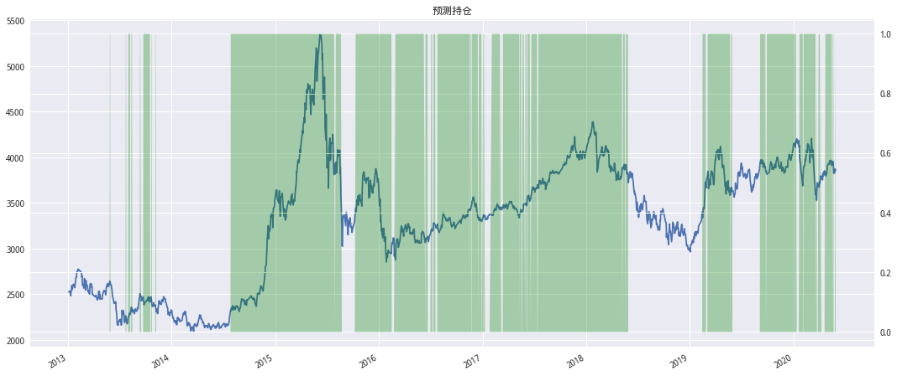
三、HS300日涨跌预测——小波降噪#
与二中相比，这里增加了对输入序列的小波处理(分解、降噪和重构)。对HS300日涨跌的预测效果，汇总在res_pwsvm_pred中。
awm1 = AnalysisWaveletModel(HS300_data,[5,10,20],range(15,100+1,5),'db4','symmetric','sqtwolog',True) # 'symmetric'
awm1.iterations_params()
模型训练中: 100%|██████████| 54/54 [07:17<00:00, 8.43s/it]
检验不同时间窗情况下支持向量机的预测效果是否能够稳定的超过50%
awm1.T_Value()
't-statistic:5.522676335339947,p_value:1.0286412581539622e-06'
预测成功率前五的参数情况
# 胜率最大的前五
res_df = awm1.res_svm_pred
res_df.index = res_df['M'].astype(str) + '_' + res_df['训练窗宽'].astype(str)
top_5 = res_df.sort_values('成功概率',ascending=False).head()
top_5_list = top_5.index.tolist()
top_5
| M | 训练窗宽 | 总预测次数 | 成功次数 | 成功概率 | 上涨预测成功率 | 下跌预测成功概率 | |
|---|---|---|---|---|---|---|---|
| 20_95 | 20 | 95 | 1684 | 887 | 0.526722 | 0.685941 | 0.351621 |
| 5_95 | 5 | 95 | 1699 | 894 | 0.526192 | 0.675676 | 0.362515 |
| 10_95 | 10 | 95 | 1694 | 888 | 0.524203 | 0.679458 | 0.35396 |
| 20_90 | 20 | 90 | 1689 | 880 | 0.521018 | 0.662528 | 0.364882 |
| 10_90 | 10 | 90 | 1699 | 884 | 0.520306 | 0.661036 | 0.366215 |
# 查看预测成功概率前五的净值情况
flag = awm1.Flag_df
flag = flag.apply(lambda x:np.maximum(x,0))
next_ret = HS300_data['close'].pct_change().shift(-1)
# 计算净值
cum = (1 + flag.mul(next_ret,axis=0)).cumprod()
volatility = cum.std() * np.sqrt(244) # 波动率
annual_ret_rate = np.power(cum.iloc[-2],244 / len(cum))-1 # 年化收益
sharpe = annual_ret_rate / volatility # 夏普
# 预测成功率最高的5组
top_5_p = top_5.index.tolist()
# 累计净值最高的5组
top_5_c = cum.iloc[-2].sort_values(ascending=False).head().index.tolist()
# 夏普最高的5组
top_5_s = sharpe.sort_values(ascending=False).head().index.tolist()
plot_cum(flag,HS300_data['close'],top_5_p,'预测成功率的前5的净值')
plot_cum(flag,HS300_data['close'],top_5_c,'累计净值的前5的净值')
plot_cum(flag,HS300_data['close'],top_5_s,'夏普比率的前5的净值')
查看预测成功概率最大的持仓标记点(红点为持仓标记点)
# 持仓标记
mpl.rcParams['font.family'] = 'serif'
mask = flag.loc[:, top_5_s[0]]
mask = mask.reset_index(drop=True)
mask = mask[mask == 1]
HS300_data['close'].plot(
figsize=(18, 8),
title='预测持仓',
markevery=mask.index.tolist(),
marker='o',
mfc='red',
ms=3,
mec='red')
<matplotlib.axes._subplots.AxesSubplot at 0x7ff9a7431ef0>
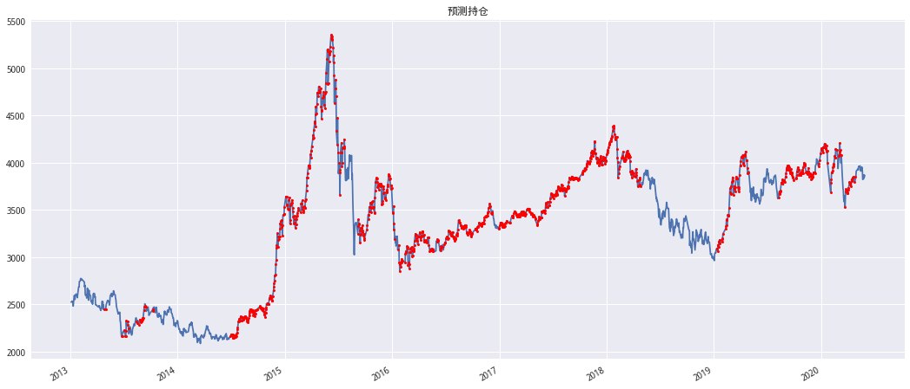
小波处理对于预测结果的提升效果不显著，因为二与三中的HS300预测结果类似，没有显著差别。
plt.figure(figsize=(18,8))
n = len(awm1.res_svm_pred)
X = np.arange(n)
mpl.rcParams['font.family']='serif'
Y1 = awm.res_svm_pred['成功概率'].values
Y2 = awm1.res_svm_pred['成功概率'].values
plt.bar(X, Y1, alpha=0.9, width = 0.35, label='无滤波', lw=1)
plt.bar(X+0.35, Y2, alpha=0.9, width = 0.35, label='有滤波', lw=1)
plt.legend(loc="upper left")
<matplotlib.legend.Legend at 0x7ff9a7527048>
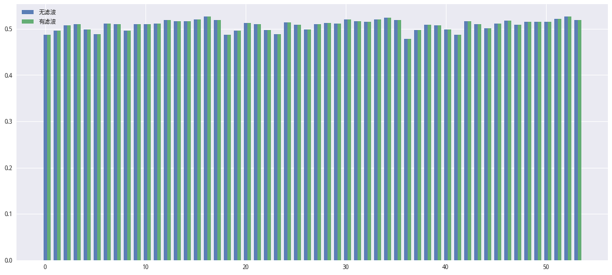
基于小波加svm模型进行回测分析#
与研究直接模拟的结果差不多 没有一个能打的 为什么预测成功率高但是回测结果如此差？
#1 设定回测的 策略id
pa = parameter_analysis('f2b8666004f9f7c54089b881f7eff6a8')
#2 运行回测
pa.get_backtest_data(file_name = 'results_svm.pkl', # 保存回测结果的Pickle文件名
running_max = 2, # 同时回测的最大个数,可以通过积分商城兑换
benchmark_id = None, # 基准的回测ID,注意是回测ID而不是策略ID,为None时为策略中使用的基准
start_date = '2014-01-01', #回测开始时间
end_date = '2020-05-31', #回测结束时间
frequency = 'day', #回测频率,支持 day, minute, tick
initial_cash = '2000000', #初始资金
param_names = ['M','N'], #变量名称
param_values = [(5,),tuple(range(30,91,5))], # 变量对应的参数
python_version = 3, # 回测python版本
use_credit = True # 是否允许消耗积分继续回测
)
【已完成|运行中|待运行】: [0|0|13]. [0|2|11]. [0|2|11]. [0|2|11]. [0|2|11]. [0|2|11]. [0|2|11]. [0|2|11]. [0|2|11]. [0|2|11]. [0|2|11]. [0|2|11]. [0|2|11]. [0|2|11]. [0|2|11]. [0|2|11]. [0|2|11]. [0|2|11]. [0|2|11]. [0|2|11]. [0|2|11]. [0|2|11]. [0|2|11]. [0|2|11]. [0|2|11]. [0|2|11]. [0|2|11]. [0|2|11]. [0|2|11]. [0|2|11]. [0|2|11]. [0|2|11]. [0|2|11]. [0|2|11]. [0|2|11]. [0|2|11]. [0|2|11]. [0|2|11]. [0|2|11]. [0|2|11]. [0|2|11]. [0|2|11]. [0|2|11]. [0|2|11]. [0|2|11]. [1|1|11]. [1|2|10]. [1|2|10]. [1|2|10]. [1|2|10]. [1|2|10]. [1|2|10]. [1|2|10]. [2|1|10]. [已用0.082时,尚余0.453时,请不要关闭浏览器]. [2|2|9]. [2|2|9]. [2|2|9]. [2|2|9]. [2|2|9]. [2|2|9]. [2|2|9]. [2|2|9]. [2|2|9]. [2|2|9]. [2|2|9]. [2|2|9]. [2|2|9]. [2|2|9]. [2|2|9]. [2|2|9]. [2|2|9]. [2|2|9]. [2|2|9]. [2|2|9]. [2|2|9]. [2|2|9]. [2|2|9]. [2|2|9]. [2|2|9]. [2|2|9]. [2|2|9]. [2|2|9]. [2|2|9]. [2|2|9]. [2|2|9]. [2|2|9]. [2|2|9]. [2|2|9]. [2|2|9]. [2|2|9]. [2|2|9]. [2|2|9]. [2|2|9]. [2|2|9]. [2|2|9]. [2|2|9]. [3|1|9]. [3|2|8]. [3|2|8]. [3|2|8]. [3|2|8]. [3|2|8]. [3|2|8]. [3|2|8]. [3|2|8]. [3|2|8]. [4|1|8]. [已用0.164时,尚余0.37时,请不要关闭浏览器]. [4|2|7]. [4|2|7]. [4|2|7]. [4|2|7]. [4|2|7]. [4|2|7]. [4|2|7]. [4|2|7]. [4|2|7]. [4|2|7]. [4|2|7]. [4|2|7]. [4|2|7]. [4|2|7]. [4|2|7]. [4|2|7]. [4|2|7]. [4|2|7]. [4|2|7]. [4|2|7]. [4|2|7]. [4|2|7]. [4|2|7]. [4|2|7]. [4|2|7]. [4|2|7]. [4|2|7]. [4|2|7]. [4|2|7]. [4|2|7]. [4|2|7]. [4|2|7]. [4|2|7]. [4|2|7]. [4|2|7]. [4|2|7]. [4|2|7]. [4|2|7]. [4|2|7]. [4|2|7]. [5|1|7]. [5|2|6]. [5|2|6]. [5|2|6]. [5|2|6]. [5|2|6]. [5|2|6]. [5|2|6]. [5|2|6]. [5|2|6]. [5|2|6]. [5|2|6]. [6|1|6]. [已用0.246时,尚余0.287时,请不要关闭浏览器]. [6|2|5]. [6|2|5]. [6|2|5]. [6|2|5]. [6|2|5]. [6|2|5]. [6|2|5]. [6|2|5]. [6|2|5]. [6|2|5]. [6|2|5]. [6|2|5]. [6|2|5]. [6|2|5]. [6|2|5]. [6|2|5]. [6|2|5]. [6|2|5]. [6|2|5]. [6|2|5]. [6|2|5]. [6|2|5]. [6|2|5]. [6|2|5]. [6|2|5]. [6|2|5]. [6|2|5]. [6|2|5]. [6|2|5]. [6|2|5]. [6|2|5]. [6|2|5]. [6|2|5]. [6|2|5]. [6|2|5]. [6|2|5]. [6|2|5]. [6|2|5]. [6|2|5]. [6|2|5]. [7|1|5]. [7|2|4]. [7|2|4]. [7|2|4]. [7|2|4]. [7|2|4]. [7|2|4]. [7|2|4]. [7|2|4]. [7|2|4]. [7|2|4]. [7|2|4]. [7|2|4]. [8|1|4]. [已用0.33时,尚余0.206时,请不要关闭浏览器]. [8|2|3]. [8|2|3]. [8|2|3]. [8|2|3]. [8|2|3]. [8|2|3]. [8|2|3]. [8|2|3]. [8|2|3]. [8|2|3]. [8|2|3]. [8|2|3]. [8|2|3]. [8|2|3]. [8|2|3]. [8|2|3]. [8|2|3]. [8|2|3]. [8|2|3]. [8|2|3]. [8|2|3]. [8|2|3]. [8|2|3]. [8|2|3]. [8|2|3]. [8|2|3]. [8|2|3]. [8|2|3]. [8|2|3]. [8|2|3]. [8|2|3]. [8|2|3]. [8|2|3]. [8|2|3]. [8|2|3]. [8|2|3]. [8|2|3]. [8|2|3]. [9|1|3]. [9|2|2]. [9|2|2]. [9|2|2]. [9|2|2]. [9|2|2]. [9|2|2]. [9|2|2]. [9|2|2]. [9|2|2]. [9|2|2]. [9|2|2]. [9|2|2]. [9|2|2]. [9|2|2]. [9|2|2]. [9|2|2]. [10|1|2]. [已用0.416时,尚余0.125时,请不要关闭浏览器]. [10|2|1]. [10|2|1]. [10|2|1]. [10|2|1]. [10|2|1]. [10|2|1]. [10|2|1]. [10|2|1]. [10|2|1]. [10|2|1]. [10|2|1]. [10|2|1]. [10|2|1]. [10|2|1]. [10|2|1]. [10|2|1]. [10|2|1]. [10|2|1]. [10|2|1]. [10|2|1]. [10|2|1]. [10|2|1]. [10|2|1]. [10|2|1]. [10|2|1]. [10|2|1]. [10|2|1]. [10|2|1]. [10|2|1]. [10|2|1]. [10|2|1]. [10|2|1]. [10|2|1]. [10|2|1]. [10|2|1]. [10|2|1]. [10|2|1]. [10|2|1]. [11|1|1]. [11|2|0]. [11|2|0]. [11|2|0]. [11|2|0]. [11|2|0]. [11|2|0]. [12|1|0]. [12|1|0]. [12|1|0]. [12|1|0]. [12|1|0]. [12|1|0]. [12|1|0]. [12|1|0]. [12|1|0]. [12|1|0]. [12|1|0]. [12|1|0]. [12|1|0]. [12|1|0]. [12|1|0]. [12|1|0]. [12|1|0]. [12|1|0]. [12|1|0]. [12|1|0]. [12|1|0]. [12|1|0]. [12|1|0]. [12|1|0]. [12|1|0]. [12|1|0]. [12|1|0]. [12|1|0]. [12|1|0]. [12|1|0]. [12|1|0]. [12|1|0]. [12|1|0]. [12|1|0]. [12|1|0]. [12|1|0]. [12|1|0]. [12|1|0]. [12|1|0].
【回测完成】总用时：1960秒(即0.54小时)。
#3 数据读取
pa.read_backtest_data('results_svm.pkl')
#4 查看回测结果指标
pa.evaluations_df.T
| 0 | 1 | 2 | 3 | 4 | 5 | 6 | 7 | 8 | 9 | 10 | 11 | 12 | |
|---|---|---|---|---|---|---|---|---|---|---|---|---|---|
| M | 5 | 5 | 5 | 5 | 5 | 5 | 5 | 5 | 5 | 5 | 5 | 5 | 5 |
| N | 30 | 35 | 40 | 45 | 50 | 55 | 60 | 65 | 70 | 75 | 80 | 85 | 90 |
| __version | 101 | 101 | 101 | 101 | 101 | 101 | 101 | 101 | 101 | 101 | 101 | 101 | 101 |
| algorithm_return | 0.296943 | -0.0291966 | 0.173858 | 0.434301 | 0.487472 | 0.272195 | 0.158365 | 0.436029 | 0.107212 | 0.0838841 | 0.441586 | 0.360952 | 0.202684 |
| algorithm_volatility | 0.186656 | 0.204275 | 0.190802 | 0.193829 | 0.189425 | 0.198094 | 0.20357 | 0.212711 | 0.219346 | 0.218904 | 0.214333 | 0.217222 | 0.220405 |
| alpha | -0.023704 | -0.0747053 | -0.0405674 | -0.0087534 | -0.00135994 | -0.0292989 | -0.0464032 | -0.0132163 | -0.0580846 | -0.0615003 | -0.0127157 | -0.0237408 | -0.0450468 |
| annual_algo_return | 0.0425208 | -0.00473432 | 0.0260043 | 0.0594648 | 0.0656591 | 0.039309 | 0.0238234 | 0.0596691 | 0.0164446 | 0.0129841 | 0.0603247 | 0.0505953 | 0.0299984 |
| annual_bm_return | 0.0845166 | 0.0845166 | 0.0845166 | 0.0845166 | 0.0845166 | 0.0845166 | 0.0845166 | 0.0845166 | 0.0845166 | 0.0845166 | 0.0845166 | 0.0845166 | 0.0845166 |
| avg_excess_return | -0.000107548 | -0.000299045 | -0.00017048 | -4.78106e-05 | -2.18648e-05 | -0.000123294 | -0.000187459 | -5.5756e-05 | -0.000225272 | -0.000239291 | -5.2701e-05 | -9.38021e-05 | -0.000174045 |
| avg_position_days | 949 | 946 | 948 | 958 | 950 | 1003 | 1035 | 1044 | 1074 | NaN | 1092 | 1090 | 1089 |
| avg_trade_return | 0.00917282 | 0.00377453 | 0.00771613 | 0.0111734 | 0.0129777 | 0.00748756 | 0.00694667 | 0.0128408 | 0.0103817 | NaN | 0.0220747 | 0.0169054 | 0.0128258 |
| benchmark_return | 0.659644 | 0.659644 | 0.659644 | 0.659644 | 0.659644 | 0.659644 | 0.659644 | 0.659644 | 0.659644 | 0.659644 | 0.659644 | 0.659644 | 0.659644 |
| benchmark_volatility | 0.237497 | 0.237497 | 0.237497 | 0.237497 | 0.237497 | 0.237497 | 0.237497 | 0.237497 | 0.237497 | 0.237497 | 0.237497 | 0.237497 | 0.237497 |
| beta | 0.589101 | 0.673253 | 0.596894 | 0.633879 | 0.606943 | 0.642634 | 0.678995 | 0.738721 | 0.775648 | 0.774642 | 0.742204 | 0.771309 | 0.787238 |
| day_win_ratio | 0.488789 | 0.47918 | 0.484946 | 0.484305 | 0.486867 | 0.482383 | 0.488789 | 0.488789 | 0.491992 | NaN | 0.492633 | 0.490711 | 0.493274 |
| excess_return | -0.218541 | -0.415053 | -0.292705 | -0.135778 | -0.10374 | -0.233453 | -0.30204 | -0.134737 | -0.332862 | -0.346918 | -0.131389 | -0.179973 | -0.275336 |
| excess_return_max_drawdown | 0.311672 | 0.464375 | 0.427658 | 0.403381 | 0.337682 | 0.388449 | 0.392102 | 0.287311 | 0.402455 | 0.41765 | 0.313332 | 0.313876 | 0.353822 |
| excess_return_max_drawdown_period | [2014-01-20, 2018-06-05] | [2014-05-19, 2020-04-30] | [2015-08-26, 2020-05-08] | [2015-08-26, 2020-01-14] | [2015-08-26, 2020-05-19] | [2014-03-20, 2020-01-13] | [2014-03-20, 2020-05-19] | [2015-08-26, 2020-01-13] | [2014-03-20, 2020-05-29] | [2014-03-20, 2020-04-28] | [2019-01-03, 2019-09-16] | [2019-01-03, 2019-09-09] | [2014-03-20, 2020-04-28] |
| excess_return_sharpe | -0.493622 | -0.818689 | -0.584105 | -0.415774 | -0.367793 | -0.530819 | -0.654098 | -0.461801 | -0.788066 | -0.818656 | -0.453499 | -0.551616 | -0.71121 |
| information | -0.266734 | -0.599236 | -0.366598 | -0.167136 | -0.12219 | -0.297118 | -0.416368 | -0.183598 | -0.52183 | -0.549653 | -0.177309 | -0.263446 | -0.428663 |
| lose_count | 33 | 38 | 31 | 25 | 21 | 25 | 25 | 22 | 21 | NaN | 15 | 16 | 13 |
| max_drawdown | 0.456814 | 0.565197 | 0.490052 | 0.431011 | 0.401588 | 0.516803 | 0.520207 | 0.468868 | 0.55462 | 0.551998 | 0.437246 | 0.461078 | 0.543675 |
| max_drawdown_period | [2015-06-08, 2016-03-11] | [2015-06-08, 2020-03-23] | [2015-06-08, 2020-05-22] | [2015-06-08, 2019-02-15] | [2015-06-08, 2016-01-28] | [2015-06-08, 2016-02-02] | [2015-06-08, 2020-04-24] | [2015-06-08, 2016-02-29] | [2015-06-08, 2016-01-28] | [2015-06-08, 2016-01-28] | [2015-06-08, 2016-01-28] | [2015-06-08, 2016-01-28] | [2015-06-08, 2016-01-28] |
| max_leverage | 0 | 0 | 0 | 0 | 0 | 0 | 0 | 0 | 0 | 0 | 0 | 0 | 0 |
| period_label | 2020-05 | 2020-05 | 2020-05 | 2020-05 | 2020-05 | 2020-05 | 2020-05 | 2020-05 | 2020-05 | 2020-05 | 2020-05 | 2020-05 | 2020-05 |
| profit_loss_ratio | 1.28416 | 1.00745 | 1.21938 | 1.44768 | 1.58713 | 1.37043 | 1.22838 | 1.47365 | 1.13299 | NaN | 1.71123 | 1.87305 | 1.44643 |
| sharpe | 0.0135048 | -0.218991 | -0.0733516 | 0.100422 | 0.135458 | -0.00348825 | -0.0794643 | 0.0924686 | -0.107389 | -0.123414 | 0.0948277 | 0.0487761 | -0.0453783 |
| sortino | 0.016379 | -0.254742 | -0.0880579 | 0.123414 | 0.163657 | -0.00406429 | -0.0895142 | 0.108099 | -0.120216 | -0.135843 | 0.108931 | 0.0555373 | -0.0503467 |
| trading_days | 1561 | 1561 | 1561 | 1561 | 1561 | 1561 | 1561 | 1561 | 1561 | 1561 | 1561 | 1561 | 1561 |
| treasury_return | 0.256329 | 0.256329 | 0.256329 | 0.256329 | 0.256329 | 0.256329 | 0.256329 | 0.256329 | 0.256329 | 0.256329 | 0.256329 | 0.256329 | 0.256329 |
| turnover_rate | 0.032501 | 0.0378018 | 0.032605 | 0.0334205 | 0.0283435 | 0.0305813 | 0.0276922 | 0.0290707 | 0.0196816 | NaN | 0.0168677 | 0.0158232 | 0.0126347 |
| win_count | 19 | 22 | 20 | 28 | 23 | 24 | 20 | 23 | 11 | NaN | 11 | 9 | 7 |
| win_ratio | 0.365385 | 0.366667 | 0.392157 | 0.528302 | 0.522727 | 0.489796 | 0.444444 | 0.511111 | 0.34375 | NaN | 0.423077 | 0.36 | 0.35 |
#5 回报率折线图
pa.plot_returns()
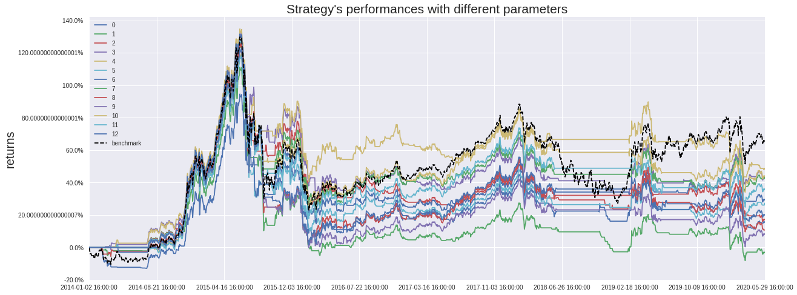
#6 回测的4个主要指标，包括总回报率、最大回撤夏普率和波动
pa.get_eval4_bar()
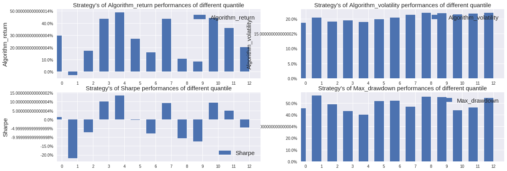
四、希尔伯特周期#
def GetSingal(time_ser:pd.Series,window:int)->int:
# 对昨日收盘价去噪
denoised_index = wave_transform(time_ser,'db4','symmetric',4,'sqtwolog',3,4)
diff_index = denoised_index.diff()
diff_index = diff_index.dropna()
# 希尔伯特周期 滚动防止 前视偏差
hilbert = diff_index.rolling(window).apply(lambda x:fftpack.hilbert(x)[-1],raw=False)
# 信号化
return np.maximum(np.sign(hilbert),0)[-1]
# 获取持仓标记
sign_hilbert = HS300_data['close'].rolling(120).apply(
GetSingal, kwargs={'window': 20}, raw=False)
sign_hilbert = sign_hilbert.dropna()
slice_df = HS300_data.reindex(sign_hilbert.index)
# 收益
next_ret = (slice_df['close'] / slice_df['pre_close'] - 1).shift(-1)
(1 + sign_hilbert * next_ret).cumprod().plot(figsize=(18, 8), title='净值情况')
(slice_df['close'] / slice_df['close'][0]).plot()
plt.legend(['algorithme', 'benchmark'], loc='upper right')
<matplotlib.legend.Legend at 0x7f945aad9e80>
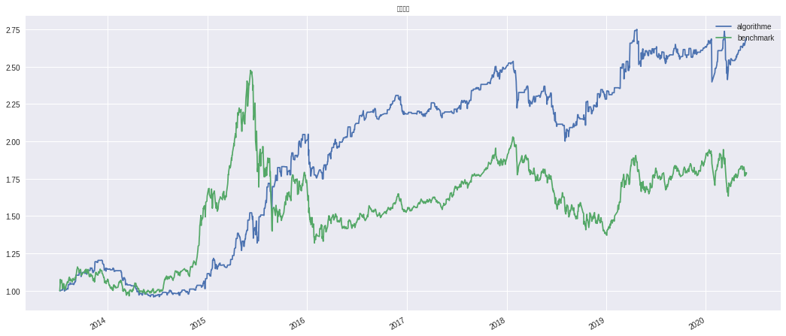
基于希尔伯特周期的信号进行回测#
基于上述预测结果中的最好预测结果，将其转换为一个择时策略。具体如下：
预测为1时持仓/开仓
预测为0时平仓/空仓
在这里选择M为滚动计算期。
结论：一个能打的都没有
#1 设定回测的 策略id
pa = parameter_analysis('cbd885c69fa1d18a13e7194d2441f8b8')
#2 运行回测
pa.get_backtest_data(file_name = 'results_hilbert.pkl', # 保存回测结果的Pickle文件名
running_max = 2, # 同时回测的最大个数,可以通过积分商城兑换
benchmark_id = None, # 基准的回测ID,注意是回测ID而不是策略ID,为None时为策略中使用的基准
start_date = '2014-01-01', #回测开始时间
end_date = '2020-05-31', #回测结束时间
frequency = 'day', #回测频率,支持 day, minute, tick
initial_cash = '2000000', #初始资金
param_names = ['N'], #变量名称
param_values = [range(10,101,10)], #变量对应的参数
python_version = 3, # 回测python版本
use_credit = True # 是否允许消耗积分继续回测
)
#3 数据读取
pa.read_backtest_data('results_hilbert.pkl')
#4 查看回测结果指标
pa.evaluations_df.T
| 0 | 1 | 2 | 3 | 4 | 5 | 6 | 7 | 8 | 9 | 10 | 11 | 12 | |
|---|---|---|---|---|---|---|---|---|---|---|---|---|---|
| N | 50 | 70 | 90 | 110 | 130 | 150 | 170 | 190 | 210 | 230 | 250 | 270 | 290 |
| __version | 101 | 101 | 101 | 101 | 101 | 101 | 101 | 101 | 101 | 101 | 101 | 101 | 101 |
| algorithm_return | 0.327563 | 0.291612 | 0.831253 | 0.195073 | 0.211342 | 0.0292128 | 0.135445 | -0.135542 | 0.0800705 | -0.0198787 | 0.178536 | -0.101422 | -0.167867 |
| algorithm_volatility | 0.17773 | 0.191697 | 0.186078 | 0.179583 | 0.179747 | 0.188753 | 0.188476 | 0.188478 | 0.182243 | 0.186736 | 0.188012 | 0.186955 | 0.192466 |
| alpha | -0.0183435 | -0.0252944 | 0.0360178 | -0.035487 | -0.0333487 | -0.0613724 | -0.0457823 | -0.0898872 | -0.0530236 | -0.0693963 | -0.0400674 | -0.0838538 | -0.0971158 |
| annual_algo_return | 0.0464241 | 0.0418333 | 0.101743 | 0.0289518 | 0.0311823 | 0.00462215 | 0.0205518 | -0.0230568 | 0.0124125 | -0.00321055 | 0.0266581 | -0.0169814 | -0.0290015 |
| annual_bm_return | 0.0845166 | 0.0845166 | 0.0845166 | 0.0845166 | 0.0845166 | 0.0845166 | 0.0845166 | 0.0845166 | 0.0845166 | 0.0845166 | 0.0845166 | 0.0845166 | 0.0845166 |
| avg_excess_return | -9.20479e-05 | -0.000111473 | 0.000115575 | -0.000156138 | -0.000147982 | -0.000253163 | -0.000192234 | -0.000369528 | -0.000224361 | -0.000287103 | -0.000170868 | -0.000345986 | -0.000397716 |
| avg_position_days | 767 | 745 | 757 | 756 | 758 | 750 | 753 | 755 | NaN | 768 | 765 | 786 | 776 |
| avg_trade_return | 0.00156081 | 0.00157363 | 0.00238358 | 0.00140264 | 0.00136851 | 0.000884783 | 0.00116529 | 0.000424931 | NaN | 0.000838961 | 0.00131896 | 0.00055418 | 0.000347771 |
| benchmark_return | 0.659644 | 0.659644 | 0.659644 | 0.659644 | 0.659644 | 0.659644 | 0.659644 | 0.659644 | 0.659644 | 0.659644 | 0.659644 | 0.659644 | 0.659644 |
| benchmark_volatility | 0.237497 | 0.237497 | 0.237497 | 0.237497 | 0.237497 | 0.237497 | 0.237497 | 0.237497 | 0.237497 | 0.237497 | 0.237497 | 0.237497 | 0.237497 |
| beta | 0.556367 | 0.609382 | 0.577869 | 0.548981 | 0.551054 | 0.583929 | 0.591556 | 0.602704 | 0.571384 | 0.588225 | 0.600349 | 0.60365 | 0.631548 |
| day_win_ratio | 0.514414 | 0.503523 | 0.518258 | 0.498398 | 0.517617 | 0.504164 | 0.508648 | 0.504164 | NaN | 0.502242 | 0.493914 | 0.492633 | 0.491992 |
| excess_return | -0.200092 | -0.221753 | 0.103401 | -0.279922 | -0.27012 | -0.379859 | -0.31585 | -0.47913 | -0.349216 | -0.409439 | -0.289886 | -0.458572 | -0.498607 |
| excess_return_max_drawdown | 0.487087 | 0.515493 | 0.378889 | 0.437723 | 0.460223 | 0.492667 | 0.466627 | 0.53757 | 0.540285 | 0.500477 | 0.494118 | 0.598061 | 0.553524 |
| excess_return_max_drawdown_period | [2014-03-20, 2015-06-08] | [2014-07-18, 2015-06-08] | [2014-05-19, 2015-05-26] | [2014-05-15, 2015-05-26] | [2014-06-25, 2015-05-26] | [2014-01-20, 2015-06-08] | [2014-06-05, 2015-06-08] | [2014-03-20, 2020-01-02] | [2014-01-20, 2015-06-08] | [2014-05-19, 2015-06-08] | [2014-07-18, 2015-06-08] | [2014-05-19, 2018-02-26] | [2014-01-20, 2020-02-25] |
| excess_return_sharpe | -0.469549 | -0.5051 | -0.148111 | -0.551942 | -0.542205 | -0.696876 | -0.618615 | -0.894331 | -0.666361 | -0.760607 | -0.59853 | -0.8689 | -0.969853 |
| information | -0.239822 | -0.273205 | 0.10716 | -0.339896 | -0.327324 | -0.493971 | -0.402981 | -0.695282 | -0.454576 | -0.55575 | -0.373256 | -0.665515 | -0.761825 |
| lose_count | 144 | 153 | 156 | 138 | 140 | 141 | 139 | 141 | NaN | 146 | 156 | 139 | 127 |
| max_drawdown | 0.356293 | 0.396648 | 0.319995 | 0.312798 | 0.335501 | 0.34482 | 0.35471 | 0.343976 | 0.325049 | 0.282194 | 0.238149 | 0.389833 | 0.366602 |
| max_drawdown_period | [2015-05-22, 2016-01-28] | [2015-04-17, 2016-01-28] | [2015-06-05, 2015-08-25] | [2018-01-29, 2020-03-23] | [2015-06-15, 2015-08-25] | [2015-06-15, 2015-08-25] | [2015-06-15, 2015-08-25] | [2015-05-04, 2018-10-29] | [2015-08-10, 2018-08-06] | [2015-08-19, 2020-03-23] | [2015-08-19, 2016-01-28] | [2015-01-21, 2018-07-05] | [2015-06-10, 2016-01-28] |
| max_leverage | 0 | 0 | 0 | 0 | 0 | 0 | 0 | 0 | 0 | 0 | 0 | 0 | 0 |
| period_label | 2020-05 | 2020-05 | 2020-05 | 2020-05 | 2020-05 | 2020-05 | 2020-05 | 2020-05 | 2020-05 | 2020-05 | 2020-05 | 2020-05 | 2020-05 |
| profit_loss_ratio | 1.24268 | 1.22426 | 1.36167 | 1.18879 | 1.19589 | 1.11613 | 1.15299 | 1.02026 | NaN | 1.08581 | 1.16562 | 1.03287 | 1.00031 |
| sharpe | 0.0361452 | 0.00956348 | 0.33181 | -0.0615217 | -0.0490561 | -0.18743 | -0.103187 | -0.334558 | -0.151377 | -0.231399 | -0.0709628 | -0.304786 | -0.358512 |
| sortino | 0.043813 | 0.0112512 | 0.417175 | -0.0775072 | -0.058029 | -0.21587 | -0.119634 | -0.354549 | -0.169662 | -0.282166 | -0.0877193 | -0.327974 | -0.384524 |
| trading_days | 1561 | 1561 | 1561 | 1561 | 1561 | 1561 | 1561 | 1561 | 1561 | 1561 | 1561 | 1561 | 1561 |
| treasury_return | 0.256329 | 0.256329 | 0.256329 | 0.256329 | 0.256329 | 0.256329 | 0.256329 | 0.256329 | 0.256329 | 0.256329 | 0.256329 | 0.256329 | 0.256329 |
| turnover_rate | 0.237705 | 0.232079 | 0.247782 | 0.224155 | 0.224388 | 0.226101 | 0.22489 | 0.212323 | NaN | 0.212423 | 0.2233 | 0.207121 | 0.198259 |
| win_count | 226 | 211 | 231 | 211 | 210 | 210 | 212 | 190 | NaN | 183 | 190 | 186 | 182 |
| win_ratio | 0.610811 | 0.57967 | 0.596899 | 0.604585 | 0.6 | 0.598291 | 0.603989 | 0.574018 | NaN | 0.556231 | 0.549133 | 0.572308 | 0.588997 |
#5 回报率折线图
pa.plot_returns()
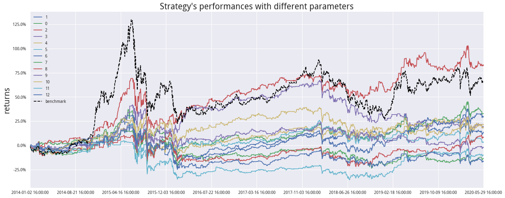
#6 回测的4个主要指标，包括总回报率、最大回撤夏普率和波动
# get_eval4_bar(self, sort_by=[])
pa.get_eval4_bar()
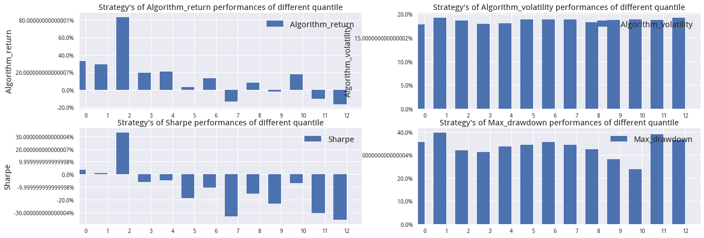